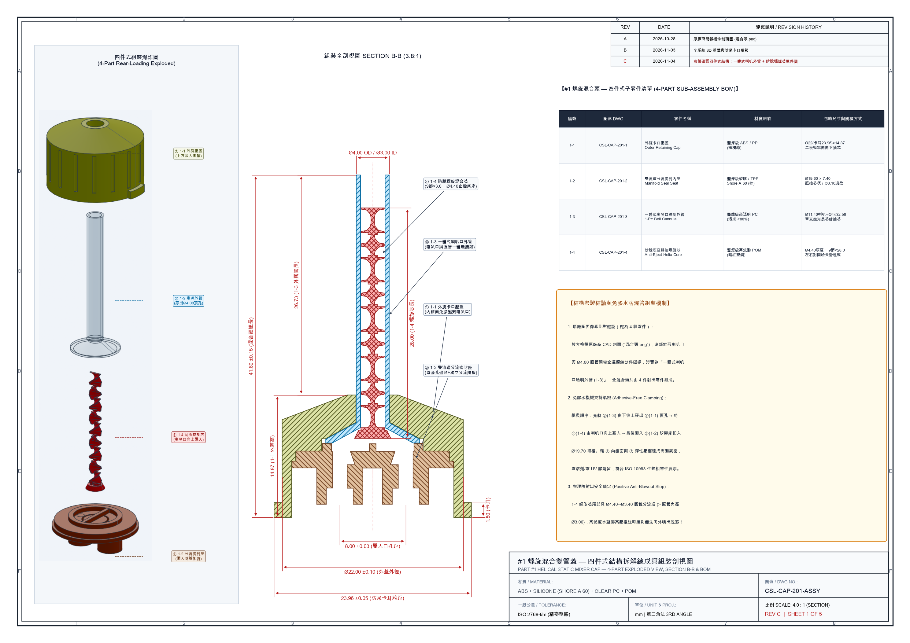

雙單管混合裝置 3D 工程展示
Rev. C · 四件式混合頭零件拆解定版
🔬 切換至：SHM 微流道混合頭 v2
📋 COSEAL 測試 SOP
A 腔 (+7.2mm)：S-buffer ＋ PEG 粉劑溶解腔
B 腔 (-7.2mm)：T-buffer 交聯鹼液
#1 混合頭：1-1～1-4 四件式免膠防脫結構
Stage 1 · 儲存密封 (#3)
Stage 2 · 單管魯爾溶粉 (#2)
Stage 3 · 雙管螺旋點膠 (#1)
Stage 4 · 🔥 #1 混合頭四件式拆解
Stage 5 · 全系統爆炸與防呆
⏳ 正在載入精確 B-Rep 3D 模型組件 (11 件 GLB)...
🖼️ 簡約模式
▶️ 自動動作演示
🔪 縱剖面透視
🧊 針筒半透明
🏷 3D 零件標註
🎛️ 機構滑桿面板
📄 混合頭拆解圖
📦 下載 STEP/PDF
🌓 主題切換
✨ 退出簡約模式 (顯示介面)
📐 工程設計圖集線上翻閱 (Rev. C 四件式混合頭拆解圖 & Rev. B 全系統主藍圖)
⬇️ 下載 #1 混合頭四件式拆解圖 PDF (5張A3)
⬇️ 下載全系統主藍圖 PDF (5張A3)
⬇️ 下載 12 張 ISO 正投影零件圖 PDF
✕ 關閉
🔥 圖集 A：#1 螺旋混合頭 — 四件式零件拆解設計圖 (Rev. C · 5張A3)
📐 圖集 B：雙單管混合裝置 — 全系統主工程藍圖 (Rev. B · 5張A3)

📦 完整 11 項工程物料清單 (Master BOM) 與獨立射出零件 STEP / STL / PDF 下載
✕ 關閉
📄 #1 混合頭四件式拆解圖 PDF (5張A3)
📄 全系統主工程藍圖 PDF (5張A3)
📄 ISO 第三角法零件圖 PDF (12張A3)
🧊 #1 混合頭四件爆炸 STEP
🧊 #1 混合頭組裝總成 STEP
🧊 全機點膠總成 STEP
🧊 三階段全系統 STEP
🖨️ 多材質 3MF 列印檔
雙單管混合裝置 (CSL-SYS-000 Rev. C) — 11 項獨立開模零件清單與單件 3D 實體檔 (含 #1 混合頭 1-1～1-4 四件拆解)
項次
零件編號
中文名稱
English Name
數量
建議醫療材質
關鍵配合與公差規範
單件 3D 下載
01
CSL-PRT-101
雙腔針筒本體
Dual-Barrel Syringe Body
1
醫療級透明 COC / PP
孔距 14.40±0.05 / 內孔 Ø12.20±0.05 / +Y 60° & -Y 20° 防呆卡口
STEP
(CSL-PRT-101 雙腔針筒本體)
·
STL
(CSL-PRT-101 雙腔針筒本體)
02
CSL-PRT-102
十字推桿
Cruciform Plunger Rod
2
醫療級 PP / ABS
有效肩長 72.30±0.10 (總長 75.50) / 尾盤 Ø12.80×1.60 / 頸 Ø6.20
STEP
(CSL-PRT-102 十字推桿)
·
STL
(CSL-PRT-102 十字推桿)
03
CSL-PRT-103
三環彈性活塞
Triple-Rib Elastomer Stopper
2
醫療級溴化丁基膠 (Shore A 55)
成型外徑 Ø12.50±0.10 (過盈氣密) × 高 7.00 mm
STEP
(CSL-PRT-103 三環彈性活塞)
·
STL
(CSL-PRT-103 三環彈性活塞)
04
CSL-PRT-104
#4 單雙管推拉切換片
Single/Dual Plunger Clip
1
醫療級 POM (Delrin) / PP
30.0×16.4×4.0 / B 軸 Ø6.80 常駐樞轉 90° / A 軸 11.90 C 型彈扣
STEP
(CSL-PRT-104 #4 單雙管推拉切換片)
·
STL
(CSL-PRT-104 #4 單雙管推拉切換片)
05
CSL-CAP-201-1
#1-1 外旋卡口壓蓋
Part 1-1: Bayonet Retaining Outer Cap
1
醫療級 ABS / PP (橄欖綠)
Ø22.00×14.87 / 防呆卡耳跨距 23.96±0.05 / 內階梯腔無倒勾免膠壓緊
STEP
(CSL-CAP-201-1 #1-1 外旋卡口壓蓋)
·
STL
(CSL-CAP-201-1 #1-1 外旋卡口壓蓋)
06
CSL-CAP-201-2
#1-2 雙流道分流密封內座
Part 1-2: Dual-Channel Manifold Seal Seat
1
醫療級矽膠 / TPE (Shore A 60)
Ø19.60×7.40 / 孔距 8.00±0.03 母套孔 Ø3.10 / Ø10 匯流杯+0.80 隔板
STEP
(CSL-CAP-201-2 #1-2 雙流道分流密封內座)
·
STL
(CSL-CAP-201-2 #1-2 雙流道分流密封內座)
07
CSL-CAP-201-3
#1-3 一體式喇叭口透明混合外管
Part 1-3: 1-Piece Bell-Mouth Clear Cannula
1
醫療級透明 PC / COC
總長 32.56 / 底部喇叭口 Ø11.40→直管 Ø4.00 OD × Ø3.00 ID (一體無接縫)
STEP
(CSL-CAP-201-3 #1-3 一體式喇叭口透明混合外管)
·
STL
(CSL-CAP-201-3 #1-3 一體式喇叭口透明混合外管)
08
CSL-CAP-201-4
#1-4 防脫出底座 9 節螺旋混合芯
Part 1-4: Anti-Ejection 9-Element Helical Core
1
醫療級高剛性 POM (暗紅)
總長 28.00 / 尾端 Ø4.40→Ø3.40 防爆衝止擋環 (>Ø3.00 管孔) + 9 節螺旋葉
STEP
(CSL-CAP-201-4 #1-4 防脫出底座 9 節螺旋混合芯)
·
STL
(CSL-CAP-201-4 #1-4 防脫出底座 9 節螺旋混合芯)
09
CSL-CAP-202A
#2 魯爾轉接滾花外環
Knurled Bayonet Ring
1
醫療級 PP / ABS (紫)
Ø30.00×3.40 (總高 15.00) / 頂面 65° 腎形旋轉讓位槽
STEP
(CSL-CAP-202 #2 魯爾混合單管蓋組)
·
STL
(CSL-CAP-202 #2 魯爾混合單管蓋組)
10
CSL-CAP-202B
#2 偏心母魯爾與盲塞芯
ISO 80369-7 Luer + Blind Core
1
醫療級 PC + TPE 雙料包膠
+4.00mm 偏心 ISO 80369-7 6% 母魯爾 (Ø7.80 螺紋) / -4.00mm B 腔盲塞
(含於 CSL-CAP-202 組件檔)
11
CSL-CAP-203
#3 初始塞閥蓋組 (含雙盲塞)
Initial Plug Valve Cap Assy
1 組
醫療級 PP (綠) + 丁基雙盲塞
Ø22.00×17.00 (旋柄高 8×厚 4) / 雙腔端面與內外徑雙重氣密
STEP
(CSL-CAP-203 #3 初始塞閥蓋組)
·
STL
(CSL-CAP-203 #3 初始塞閥蓋組)